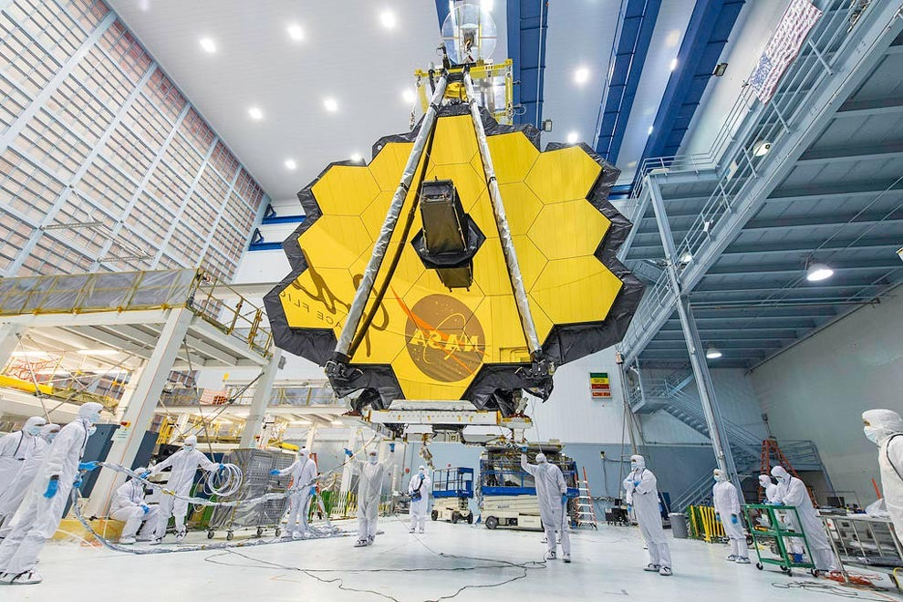
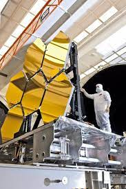
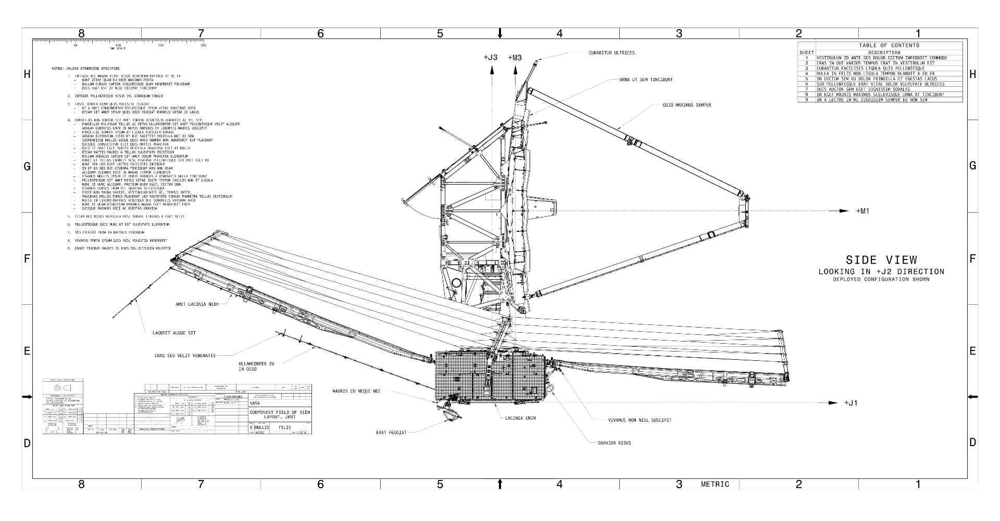
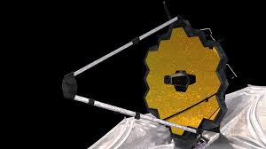
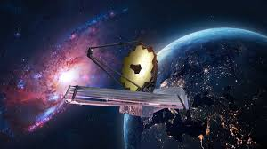
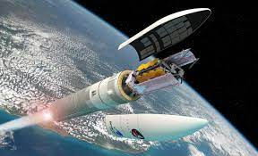
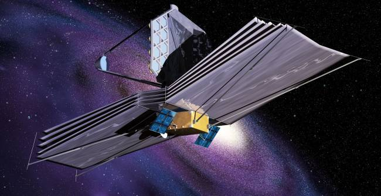
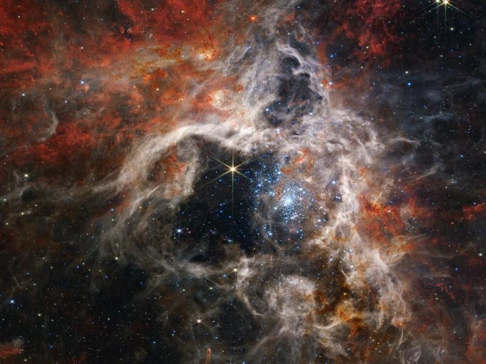
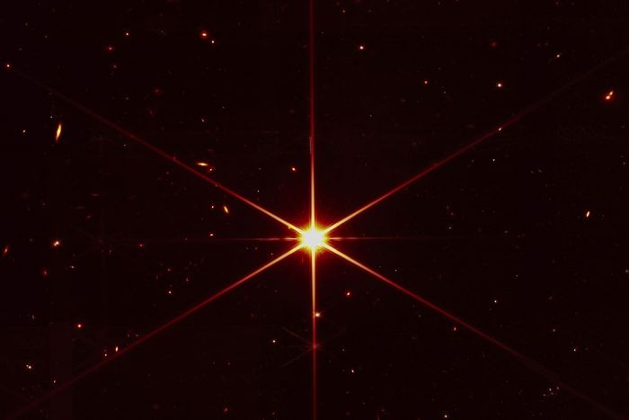
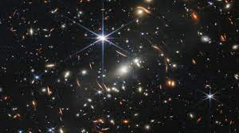

finalizacion del telescopio conocido como james webb
uno de los creadores del telescopio james webb creado y nombrado por James E. Webb

preparacion para el despliegue espacial del telescopio james webb

planos de contruccion del telescopio james webb

primer enfoque del telescopio james webb

primera orbita del telescopio james webb

despliegue al espacio del telescopio james webb

dezpliegue de los paneles del telescopio james webb

imagen tomada por el telescopio james webb

imagen tomada por el telescopio james webb

imagen tomada por el telescopio james webb
lanzamiento de la tierra al espacio el telescopio james webb